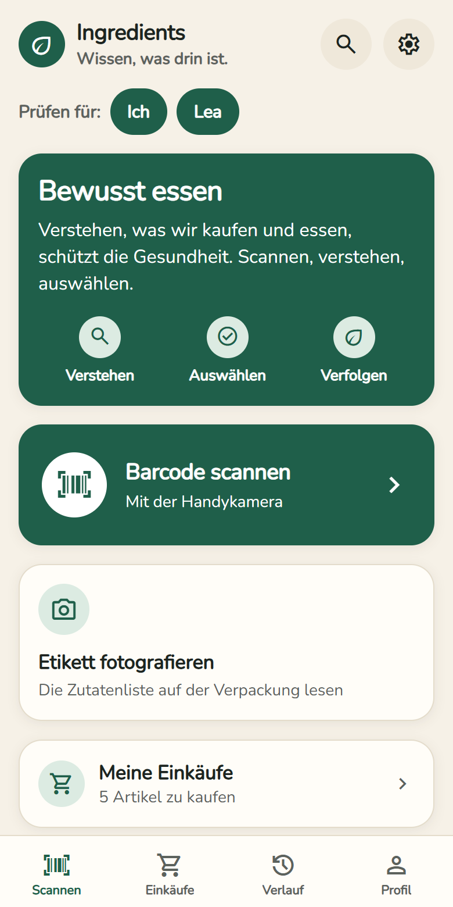
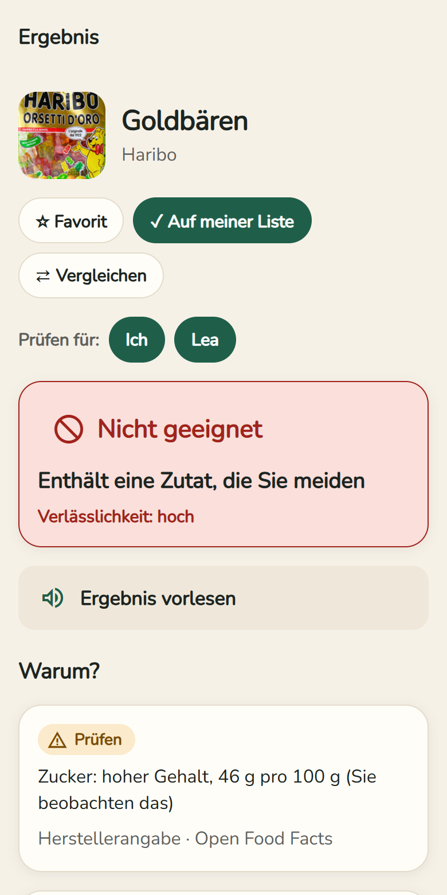
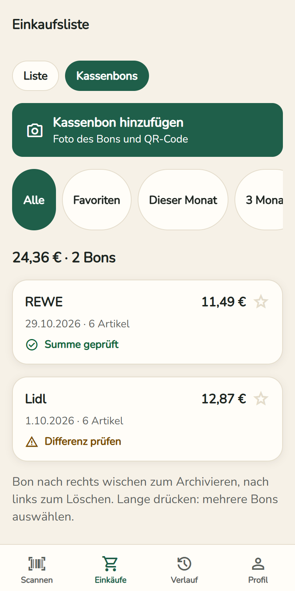
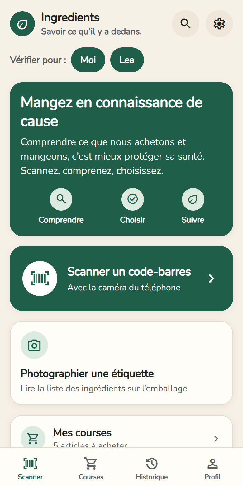
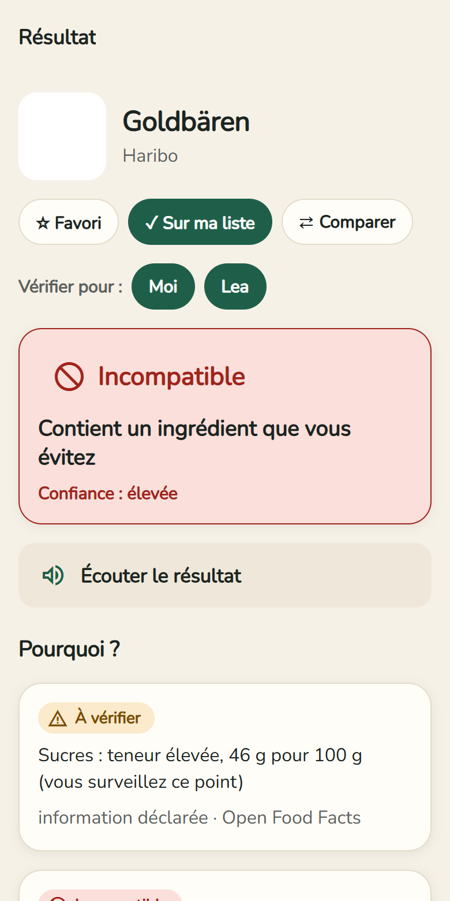
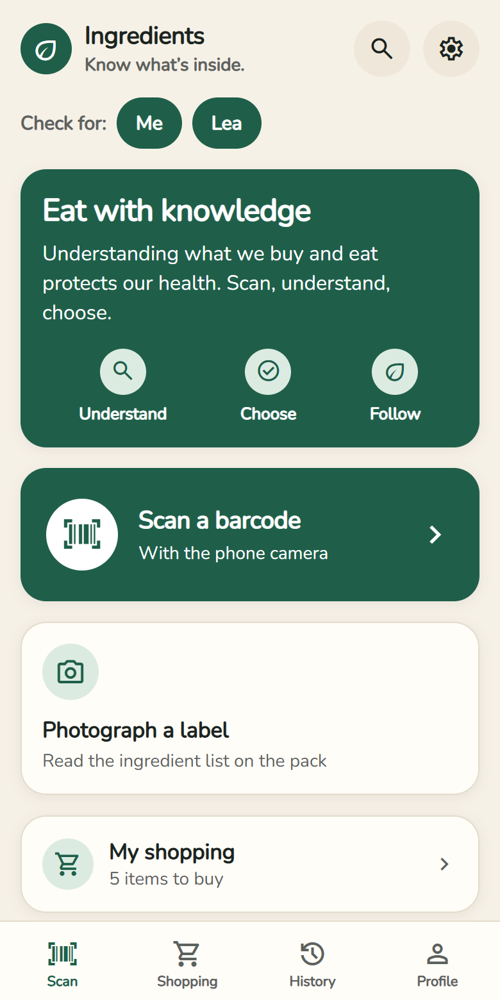
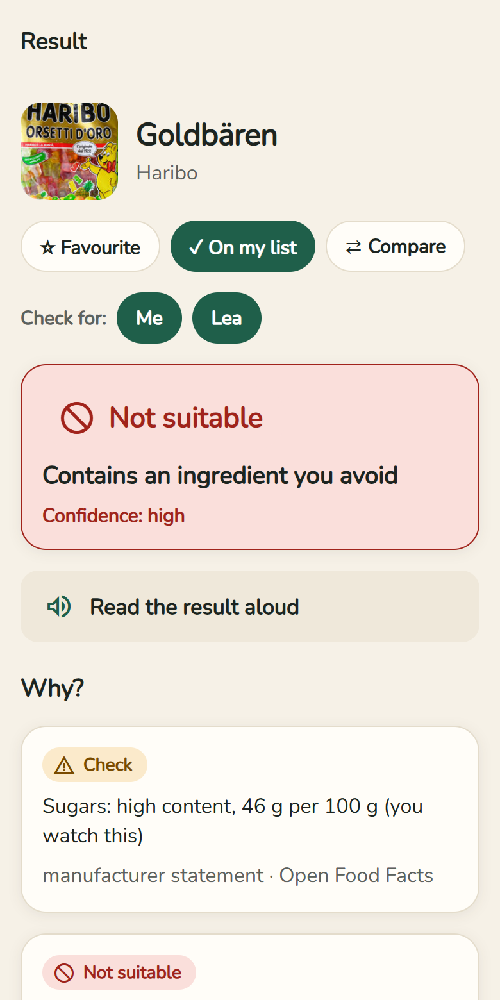
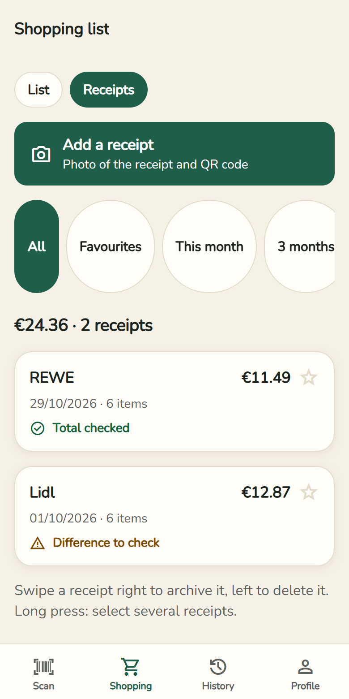

Lebensmittel prüfen – einfach, kostenlos, ohne Werbung
Scannen Sie den Barcode: Die App sagt Ihnen, ob ein Produkt zu Ihnen passt (ohne Schwein und Alkohol, vegetarisch, vegan, Allergien, Gesundheit) – und warum.
Welche Datei?
Android 7.0 oder neuer · Version 0.9.0
So installieren Sie die App
- Datei oben herunterladen (im WLAN).
- Bei Samsung kurz die Automatische Sperre ausschalten: Einstellungen → Sicherheit und Datenschutz → Automatische Sperre.
- Die Datei in Eigene Dateien → Downloads öffnen und Installieren tippen. Fragt das Handy nach Erlaubnis für „unbekannte Apps“, erlauben.
- Danach die Automatische Sperre wieder einschalten. Updates kommen von selbst in die App.



Keine Werbung, kein Konto nötig. Ihr Profil bleibt auf Ihrem Handy. Produktdaten: Open Food Facts.
Prüfsummen (SHA-256)
ingredients-0.9.0-arm64-v8a.apk754114188824821aaee3301bd1e5131dcbd97731f838784c0d95440b29b88fdeingredients-0.9.0-armeabi-v7a.apk341601d97fd33e9ae14182761fa089bbc1ae9567bf75a4209e2bd9c3a626c9cdingredients-0.9.0-universal.apkc9ad92d63d8237408cad5b83001140316df17096ff4ddc8140b500bf2a34de87
Vérifier ses aliments – simple, gratuit, sans publicité
Scannez le code-barres : l’app vous dit si un produit vous convient (sans porc ni alcool, végétarien, vegan, allergies, santé) – et pourquoi.
Quel fichier ?
Android 7.0 ou plus récent · version 0.9.0
Installer l’app
- Téléchargez le fichier ci-dessus (en Wi-Fi).
- Sur Samsung, désactivez un instant le Blocage automatique : Paramètres → Sécurité et confidentialité → Blocage automatique.
- Ouvrez le fichier dans Mes fichiers → Téléchargements et touchez Installer. Si le téléphone demande d’autoriser les « applis inconnues », autorisez.
- Réactivez ensuite le Blocage automatique. Les mises à jour arrivent toutes seules dans l’app.


Aucune publicité, aucun compte nécessaire. Votre profil reste sur votre téléphone. Données produits : Open Food Facts.
Sommes de contrôle (SHA-256)
ingredients-0.9.0-arm64-v8a.apk754114188824821aaee3301bd1e5131dcbd97731f838784c0d95440b29b88fdeingredients-0.9.0-armeabi-v7a.apk341601d97fd33e9ae14182761fa089bbc1ae9567bf75a4209e2bd9c3a626c9cdingredients-0.9.0-universal.apkc9ad92d63d8237408cad5b83001140316df17096ff4ddc8140b500bf2a34de87
Check your food – simple, free, no ads
Scan the barcode: the app tells you whether a product suits you (no pork or alcohol, vegetarian, vegan, allergies, health) – and why.
Which file?
Android 7.0 or newer · version 0.9.0
Install the app
- Download the file above (on Wi-Fi).
- On Samsung, briefly turn off Auto Blocker: Settings → Security and privacy → Auto Blocker.
- Open the file in My Files → Downloads and tap Install. If the phone asks to allow “unknown apps”, allow it.
- Then turn Auto Blocker back on. Updates arrive by themselves in the app.



No ads, no account needed. Your profile stays on your phone. Product data: Open Food Facts.
Checksums (SHA-256)
ingredients-0.9.0-arm64-v8a.apk754114188824821aaee3301bd1e5131dcbd97731f838784c0d95440b29b88fdeingredients-0.9.0-armeabi-v7a.apk341601d97fd33e9ae14182761fa089bbc1ae9567bf75a4209e2bd9c3a626c9cdingredients-0.9.0-universal.apkc9ad92d63d8237408cad5b83001140316df17096ff4ddc8140b500bf2a34de87